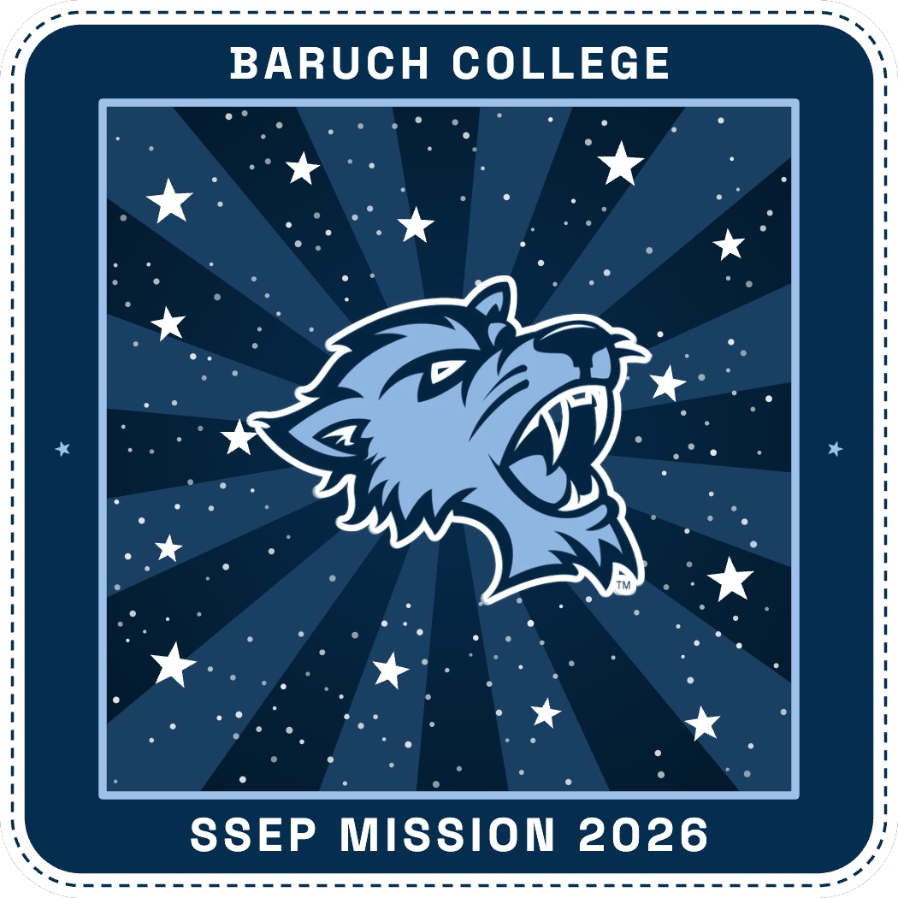

Final Mission Patch

Artist Statement
This patch represents Baruch College’s participation in scientific research and discovery in space. The design references the college’s iconic Bearcat mascot and its recognizable school colors to establish a strong connection to Baruch’s identity. Surrounding the Bearcat is a simple illustration of space, featuring different stars that symbolize the vastness of the universe and the possibilities of scientific exploration. The streaks extending toward the Bearcat represent discovery, insight, and research which symbolically connects the college’s mascot to the atmosphere of outer space.
By combining Baruch’s familiar visual identity with elements of space, the patch highlights the college’s involvement in advancing scientific knowledge beyond Earth. The Bearcat serves as a visual representation of the Baruch community, while the surrounding imagery reflects curiosity, innovation, and new discoveries. Ultimately, this patch design celebrates Baruch’s academic identity while recognizing its place in a larger scientific community, where exploration and discovery extend beyond traditional boundaries.
AI Disclosure
I sketched the original concept for this patch by hand, then used generative AI to turn that sketch into the final design. I guided the process by writing and refining prompts and selecting the final image.
♦